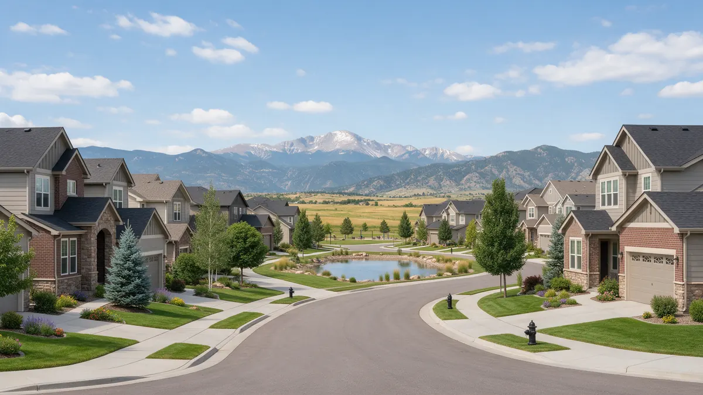

Broomfield CO Plumber Handbook

If you need a plumber in Broomfield CO, this handbook walks through what to do and what to ask in a calm, practical order. Plumbing Pros Colorado is a referral line, so you are connected with an independent local plumber who does the work. We focus on how homes in Broomfield County, built mostly in recent decades, tend to leak and how to respond.
First steps when you spot water
Close the main shutoff, which in many Broomfield homes is in the garage, basement or a utility closet near the water heater. Next, open the lowest tap to drain the line. If the water is on the ceiling, avoid standing under it and turn off the light circuit.
Take a quick video of the source, then lay towels and set fans. If water has touched a finished basement wall, lift baseboards if you can to help it dry.
Common sources in newer homes
Most Broomfield houses use PEX, copper, PVC and ABS. Problems usually come from fixtures and connections: a worn supply stop, a washing machine hose, an icemaker line, or a water heater connection. Slow drips behind refrigerators and under dishwashers often go unnoticed.
- Fridge and icemaker line
- Dishwasher supply
- Washer hoses
- Water heater connections
- Toilet supply lines
- Sink supply stops
Take a photo of the labels on your water heater and any pressure-reducing valve. Model details help the plumber bring the right parts and advise whether a unit is near the end of its working life.
Soil, slabs and basements
Broomfield sits on the Front Range plain, where expansive clay soils move with moisture. Near Big Dry Creek and Walnut Creek, and around Great Western Reservoir, the ground can be wetter. Movement can stress pipes that pass through foundation walls or slabs.
A hot spot on a floor, the sound of running water at night or a meter that moves are signs of a slab line leak. A plumber can combine pressure testing with listening gear to decide whether the leak is under concrete.
Subdivisions near Interlocken, Anthem Ranch and Palisade Park often have community irrigation and landscaped common areas. If a sprinkler line leaks, find out whether it belongs to you or to the association before calling.
How a plumber approaches it
The plumber will usually ask when the problem started and which fixtures are affected, then check the meter, pressure and main. In neighborhoods off US-36, the Northwest Parkway and near Flatiron Crossing, pressure can be high in some subdivisions, and a pressure-reducing valve may be inspected or replaced.
For hidden leaks, thermal imaging and acoustic detection reduce guessing. Ask to see what the tools showed.
If your home has a finished basement, ask about moisture readings behind the walls before any repair is declared complete. Dampness can linger after the visible leak is stopped, and drying matters for preventing mold.
Decisions you will be asked to make
Repair, reroute or replace? For a slab leak, options include opening the floor to repair the pipe, rerouting new line through walls or attic, or replacing a manifold. Each has trade-offs for disruption and long-term reliability, and a plumber can explain them without pressure.
Ask about permits, about how floors and walls will be restored, and how long the water will be off. Decide on scope together, and write down what is agreed.
Plan for the possibility that a hidden leak is not just one spot. When a plumber opens a wall, they may find that an adjacent connection is also loose, and it is easier to repair both at once.
Preventing a repeat
Turn off the water when you travel and know where the main is. Replace rubber hoses with braided ones on a regular schedule, check the water heater's relief valve and drain pan, and winterize the sprinkler system before the first hard freeze.
In winter, Colorado nights routinely fall below 32°F. Disconnect hoses, close indoor shutoffs for outdoor spigots where they exist, and keep garage-wall plumbing warm.
Write down your fixture layout if you can, even roughly: which bathrooms sit over the garage, where the laundry is, and which walls hold supply lines. A simple sketch helps a plumber plan access and often shortens the search for a hidden leak.
After any repair, check the meter again with all fixtures off. A still dial is a good sign that the repair solved the loss of water, and a moving dial means the search is not over.
Frequently asked questions
Is Broomfield a city and a county?
Yes. Broomfield is a consolidated city and county, created in 2001. For property matters, it helps to know that local rules and records come through Broomfield, which a plumber can help navigate for permits. Treat sudden warm spots as a sign to close the water heater valve and call, because a hot-line leak can waste a lot of heated water.
What causes a loud bang when I turn off a tap?
Water hammer, caused by sudden stoppage of moving water. It can come from high pressure, loose pipes, or missing air chambers. A plumber can add arrestors or adjust pressure to reduce it. Check the pressure at several times of day, since neighborhood demand and irrigation season change it.
What should I know about irrigation leaks?
A sprinkler zone that stays wet, low pressure at heads, or a pooling area can mean a broken line or valve. Many plumbers handle irrigation backflow assemblies. Shut off the sprinkler supply if you see flooding. Slab leaks need testing to find the correct line, because a plumber must know which of the hot or cold lines is leaking.
How do I find a slab leak without tearing up floors?
Plumbers use acoustic listening tools, thermal imaging and pressure tests to narrow the location first. That limits how much flooring is opened. No method is perfect, so ask what the plan is if the first test is inconclusive. Backflow preventers on irrigation systems need regular testing, and a plumber can help with those assemblies.
What if the leak is in my HOA's line?
If the pipe serves multiple units or is outside your unit, the association usually handles it. Report it in writing at once. A plumber can note whether the leak is on your side of the shutoff. Ask a neighbor to look in on the house, and consider a smart leak sensor near the water heater.
Plumbing services in Broomfield
- Water Leak Repair
- Emergency Plumbing
- Drain Cleaning
- Water Heater Services
- Sewer Line Repair
- Gas Line Services
- Slab Leak Repair
- Pipe Repair & Replacement
- Toilet Repair
- Bathroom Plumbing
Nearby Colorado cities
- Water leak repair in Woodland Park
- Water leak repair in Westminster
- Water leak repair in Lakewood
- Water leak repair in Golden
Ready to talk to someone? Call (720) 794-0974 or visit get connected with a local plumber.